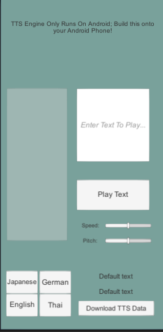
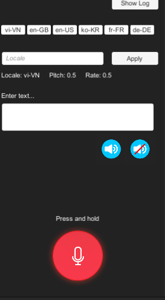
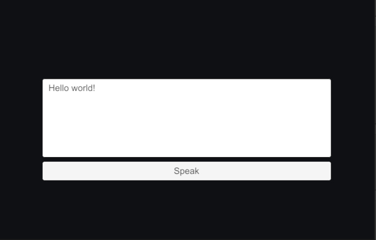

So for todays blog I will be announcing that I have started on the avatar selection process. As well as fixed up a couple of bugs that were occuring. For instance when when players grabbed an item in the virtual world, only the local world was changing rather than the multiplayer world. So it will still look the same as if the other player did not interact with the environment. I will be showing a video of it tomorrow explaining more in depth about what I mean about this. So please stay tune for that video
As pormised here is the video that I talked about. I have succesfully implemented avatar creation as well as fixed some backend issues.
Character Models provided by Tevfikufuk#6406
So for this day I have decided to revist the link that was provided to me by Dr.Diefenbach. After going through the list once again I have stumbled upon one called UnityRustTts this is a text to speech software that allows players to type in the game and have it be spoken to other players. When it comes to the pros and cons I will be talking about it more in detail for the week 7 update
I have also taken into consideration other text to speech software but once again I will be talking about then in the week 7 update.
Hello yall time for a week 7 update. Today I will be talking about the things that I have accomplished, as well as the failures that have occured for this upcoming week.
For starters lets talk about the accomplishments/updates that were made when it came to the creation of the virtual reality world. In the previous weeckly schedule I have talked about the implementation of avatars as well as a few bug fixes when it came to the backend of the game. There was an advanvement in that. Not only was I able to get the avatar selection to work properly, the implementation of people being able to see the different kinds of avatars was also succesful. By that I mean that when you select the character that you wanted, it will send a signal to photon about said character and return it to the rest who are connected.
Another advancement was the implementation of text to speech. Using the virtual keyboard players are able to input a message and be able to press a button allowing them to talk to randoms without the need of using their voice. There is a slight hiccup to that. What I mean by that it works properly when it is connected to the computer. But once I create the APK and place it unto my oculus the text to speech would not work at all. It works fine when it is connected directly to the compute but not on the oculus which I find to be a bit weird. But I will look into this issue for this upcoming week, since I find it cool to use the text to speech.
Now for the technologies that I have looked upon for this past week
UnityTTSEngine is a Text to speech program that allows the user to input a text and have the for the phone/computer to output that text for the others to hear. After countless of hours trying to get this program, unfortunetly I was not able to. No matter how many times I input the text and pressed the button to output the text. I was not able to make it work properly, even after reading the documentation it was still a failure
Pros : Having the ability to type out the text and have it be spoken rather than the person speaking it.
Cons : Not being able to make it work properly, after reading the documentation and looking into the code.
Speech and Text Unity IOS Android
Another Android Text To Speech that was recommended to me. This little text to speech looked amazing at first glance, it has the ability to talk in Endlish, Korean, French, and Dutch. I tried to get it to work in unity but nothing came off it. I have also tried to create an android apk to see if it would work under mobile devices but to my surprise it would give me a error preventing me from creating a APK. I have also tried using Unity Remote 5 but no matter what was done, my phone was not able to connect to unity.
Pros: The ability of the program having it different languages from the start is pretty cool.
Cons: Was not able to make it work. Unity Remote 5 not working properly.
UnityRustTtsLast but not least I will be talking about Unity Rust TTS. Unlike the rest, this was the one that I was able to succesfully implemented into the virtual reality game. The way this program works is that you input a string of text into the box and from there you press the speak button to have the computer speak out the sentence that you have written. Rust TTS was built on a newer version of unity but to my surprise after rolling it back to the unity version that I needed it to be on, it still worked the way that it should have after learning that the decision was made to have imported into the project that is currently being worked on. I havd to do a couple of tweaking in the source code to make it work properly and once I did that it ran well. I had to change the input from regular text to text mesh pro since the original was asking for a regular string of text. But once that was implemented it was good to go. Like I said earlier in my post that it runs amazingly well on a windows platform but exporting it to an oculus build of it, the text to speech would not work properly.
pros: Simple text to speech program
coms: having issues making it work in oculus
This is what will be worked on for the next upcoming weeksweek 8 : Implementation of Photon Voice and getting the text to speech to work properly
Week 9 : Bug fixes
Week 10 : Present
So for today I have started to work on the voice function for the game. Decided to go with Photon Voice since the backend of stuff is built under photon, it would be a no brainer to use photon voice. Since it is created by the same company.
Nothing much was worked on for today. I mainly focused on fixing a couple of bugs that I had going on. Continued to work on the voice implementation
For today I have looked upon Text to speech alternatives. I have also looked at the video that was sent to me by Dr.Diefenbach and have downloaded sidequest as instructed by the video
This is the video that was sent over to me
The other videos that I have also looked at
Also figured out that if players wanted to use a text to speech they would use a soundboard to micic as if they were talking
Did not do much today, I have been under the weather as of late so decided to take a rest for today
Hello Yall so this is my week 8 update. Not much has been implemented into the game. I have not been feeling good as of late so I worked on as much as I could. So for this week I have succesfully implemented voice chat into the game. Since it is a built inside of photon I have decided to use photon voice. Photon voice was the best option to go since Photon has it built in and all i pretty much had to do was plug and play. Thanks to my helper Ayaan for helping me test out this feature, could not have done it without his help. I have posted the what will be worked on for the following weeek.
This is what will be worked on for the next upcoming weeks
Week 9 : Bug fixes
Week 10 : Present
So I have been trying to get this program to work properly for the past couple of dats. At first I have tried to natively implement into the virtual reality program, but that was a huge mistake since my antivirus was saying that it was a virus built into the program. When i disabled my antivirus I was able to succesfully import it, but it was giving me a whole bunch of erros. The code that it was using was not compatible with the code that was being used into the virtual reality program, so i decided to scrap it and see if I can get it up and running into a seperate unity file. I got it to open without a problem but the scenes were missing some important key features so I have no idea how this kind of program would work. So I am in a bit of a picke when it comes to the text to portion side of things.